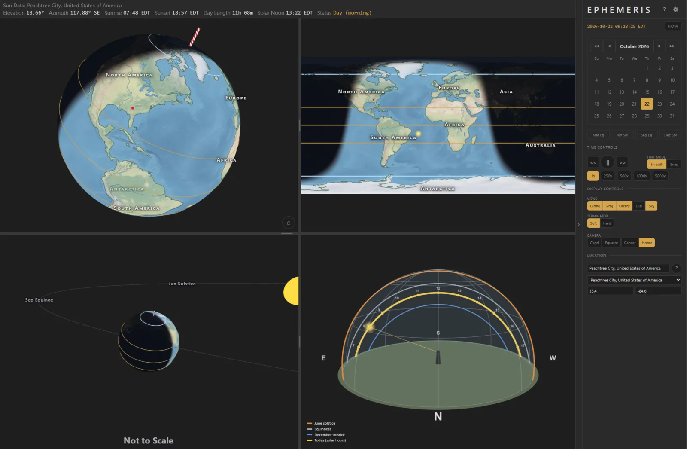
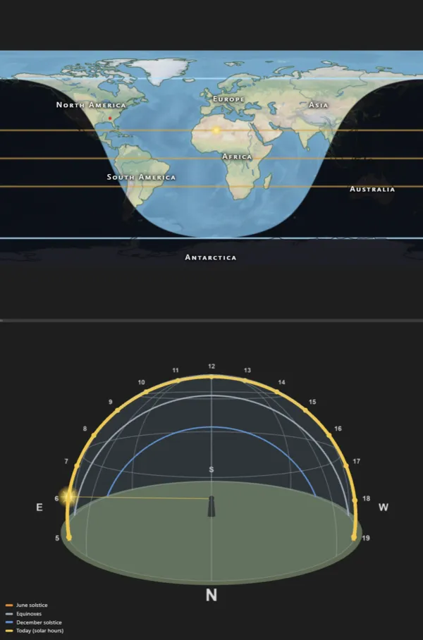
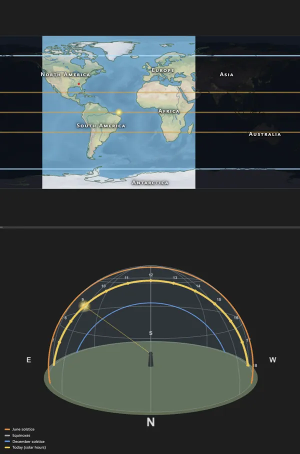
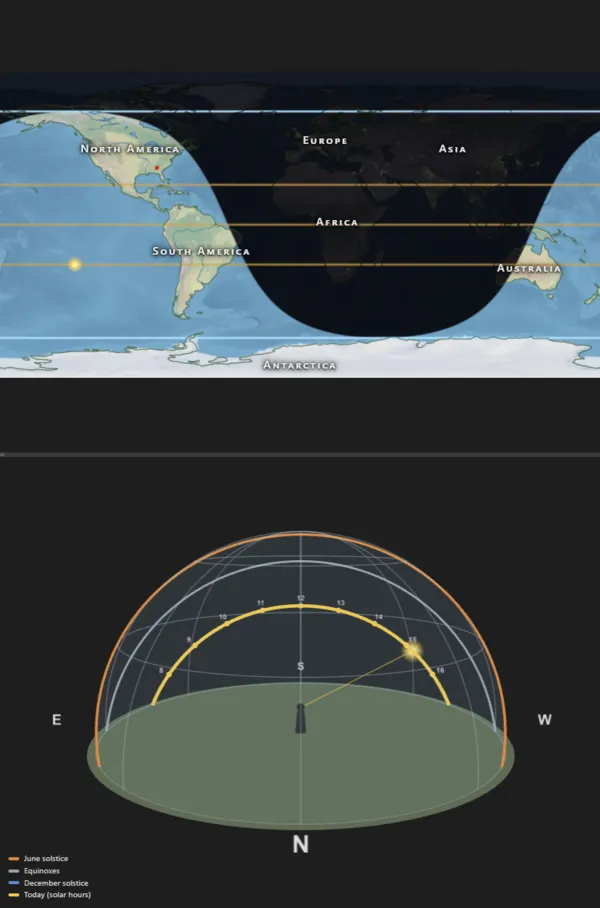

One place, three days of the year
The same place at the June solstice, the March equinox and the December solstice. Earth's 23.4° tilt never changes direction, so as Earth goes around the sun, first one hemisphere and then the other leans toward it.






What's in it
- Globe and world map with day, twilight and night, kept in step.
- Orrery showing Earth's orbit, its tilt and where the solstices fall.
- Sky dome tracing the sun's path across your sky, today and at the solstices and equinoxes.
- Sundial for reading solar time.
- Time controls: sweep smoothly through the year or step a day at a time.
- Sun data for any place: sunrise, sunset, day length, elevation and azimuth.
- Change Earth's tilt from 0° to 90° and see what seasons would look like.
- Works offline once loaded, so a weak school network won't stop a lesson.
The sun's position comes from Jean Meeus's astronomical algorithms, accurate for 200 years either side of today. Maps use public domain Natural Earth data.
Home Assistant cards
Two dashboard cards bring the same solar math to Home Assistant: the sun's path across your sky (with solar panels if you have them) and a live world map of day and night with the people in your house. Install them through HACS from fatcat/ephemeris-cards.
Run your own
Ephemeris is a static web app that runs in Docker, so a school can host its own copy. Setup, HTTPS and updates are in the README.